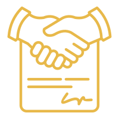

Advisory & Documentation legal services in Saudi Arabia.
Afdal Mohami's Advisory & Documentation practice offers proactive legal services that help you make informed decisions before any dispute arises, from contract drafting to official documentation and legal translation.
Many legal disputes can be avoided entirely through prior consultation or a carefully drafted contract. This practice area covers the proactive side of legal work, helping you protect yourself before a problem occurs, not just after.
We offer general legal consultations for any situation needing a legal opinion, and contract drafting and review before signing any commitment. For companies planning a major deal, we offer due diligence and business intelligence. We also help with notary and attestation documentation and legal translation for official documents.
This practice area serves anyone facing an important legal decision before making it, companies needing a contract reviewed before signing, investors planning an acquisition deal needing precise risk assessment, and those needing an official document documented or translated for a government or judicial entity.
Contact starts with a brief description of what you need reviewed or consulted on, followed by a response from a specializing lawyer within a short time, then a plan with clear cost and timeline. Many services in this practice area can be completed quickly given their advisory rather than litigious nature.
Recurring scenarios include an entrepreneur needing a partnership agreement reviewed before signing to avoid unbalanced clauses, or a company planning an acquisition needing a risk assessment of the target company. Another common scenario: an individual needing a certified translation of an official document to submit to a government entity.
We combine the response speed necessary for urgent consultations with high precision in reviewing contracts and documents, backed by a firm belief that early legal prevention is far better than treating an existing dispute later.
A quick legal consultation on a specific matter or drafting a simple contract is usually completed within a day or two, while services like establishing a complete in-house legal department or comprehensive due diligence before a major deal need extended work spanning weeks. We help you determine the actual service scope that fits your need.
For contract drafting or review requests, sending the current draft or a detailed description of the intended deal helps. For notarization services, precise data on the document type and its purpose helps speed up the procedure. No documents are needed at the general initial consultation stage.
We combine response speed that fits the pace of modern business with legal precision we never compromise, even in the simplest consultations, along with the ability to handle everything remotely through WhatsApp and official legal tech platforms without needing any office visit.
A common question: can a written legal opinion be obtained to support a board decision without entering an actual dispute? Yes, this is exactly the purpose of the proactive legal opinion service. Another question: can a certified contract be translated within one day in urgent cases? Yes, we handle urgent cases with special priority while maintaining the same legal precision standards.
We offer clear fixed fees for most services in this practice area such as contract drafting, translation, and notarization, with discounted monthly packages for companies needing recurring consultations.
Among the most common mistakes: signing an important commercial contract without prior legal review, relying on a ready-made template from the internet that doesn't account for the deal's specifics. Another mistake: relying on a non-legal translation of an official document, potentially unintentionally changing the text's legal meaning. We always recommend specialized review before signing or using any important official document.
We commit to providing clear, practical advice that fits the actual pace of your business, not complex legal theories that don't serve your practical decision, with response speed that respects your valuable time.
Many foreign companies operating in Saudi Arabia ask: can bilingual consultations accounting for the company's international team be obtained? Yes, we provide all our advisory services in Arabic and English together, ensuring full understanding for all your team members regardless of their nationality or primary language.
We recommend companies periodically review all their existing contracts and internal policies, not just when drafting a new document, since regulations continuously change and a contract that was sound years ago may become inconsistent with recent regulatory updates without regular periodic review.
We notice that companies building an ongoing advisory relationship with us, rather than contacting us only when a problem arises, save significant cost over the long term. Cumulative understanding of your business details over time makes every subsequent consultation faster and more precise, because we don't start from zero each time.
We believe the best legal consultation is one the client fully understands, not one that impresses with complex terminology. We always strive to explain every opinion or recommendation in clear, practical language, clarifying the actual effect of every decision on your legal and commercial position.
We recognize that many urgent legal matters arise outside official working hours, such as a contract needing immediate signature or an emergency matter requiring a quick opinion. We ensure a WhatsApp communication channel allowing rapid response even in urgent cases outside official hours.
Yes, we try as much as possible to provide a quick response over WhatsApp for urgent consultations, with a referral to more detailed review if needed.
It's a comprehensive review of a company's legal and financial standing before acquiring or investing in it, and we always recommend it before any major deal.
Yes, we help translate legal documents in compliance with government and judicial entity requirements.
Yes, we help review and interpret foreign contracts to ensure they comply with Saudi regulations before signing.
Yes, it varies by the size and complexity of the document or contract, and we explain this transparently after reviewing its details.
Reach a licensed lawyer within minutes on WhatsApp — in any city in the Kingdom.
Start your consultation